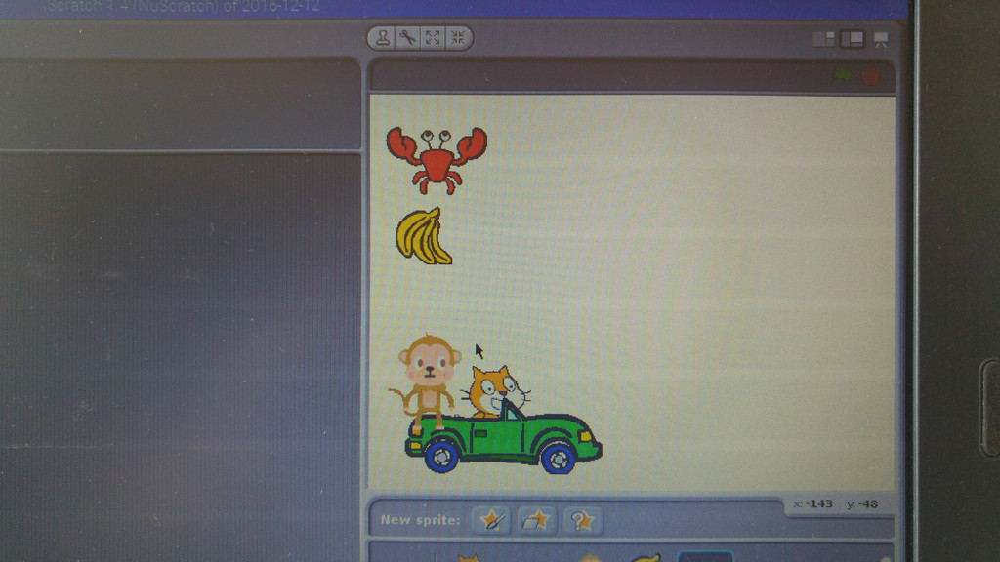
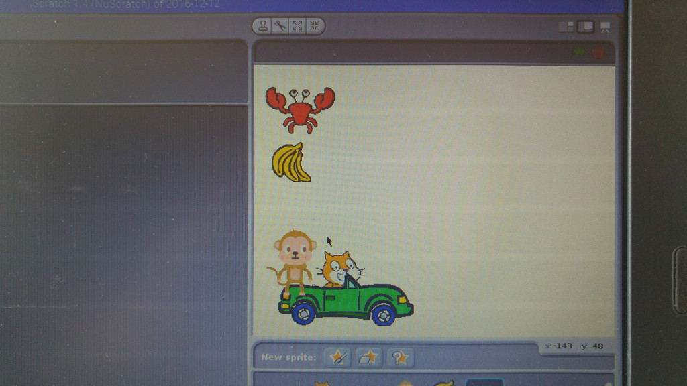

The Scratch stage on screen and unplugged
1 Select the "shrink" tool.
2 Click on the sprite to shrink it.
3 Shrink the sprite to the desired size.
4 To exit the shrink mode (and return to the normal arrow cursor/pointer) click outside the stage, e.g. in the top grey area.
 5 Click the middle star to select a sprite to add.
6 To e.g. add a car, choose (double-click) the Transportation category.
5 Click the middle star to select a sprite to add.
6 To e.g. add a car, choose (double-click) the Transportation category.
 7 To find sprites further down the list, scroll down using the slider to the right.
7 To find sprites further down the list, scroll down using the slider to the right.
 8 Select (double-click) the car.
9 The car can be placed on top of the cat to make it look as if the cat is in the car.
10 To add another sprite, e.g. a monkey, click the middle star again and press the up arrow button if the sprite selector is still in an other category (we need to go to the Animals category).
11 Choose the Animals category to find the monkey sprite.
12 Add it in the same way as you added the car.
8 Select (double-click) the car.
9 The car can be placed on top of the cat to make it look as if the cat is in the car.
10 To add another sprite, e.g. a monkey, click the middle star again and press the up arrow button if the sprite selector is still in an other category (we need to go to the Animals category).
11 Choose the Animals category to find the monkey sprite.
12 Add it in the same way as you added the car.
 13 Next sprite is the bananas in the Things category.
14 There you go.
15 And finally add a crab.
13 Next sprite is the bananas in the Things category.
14 There you go.
15 And finally add a crab.
 16 Instead of double-clicking on a sprite to add it, you can also select it with a single-click and click the OK button in the bottom right of the sprite selector dialog window.
16 Instead of double-clicking on a sprite to add it, you can also select it with a single-click and click the OK button in the bottom right of the sprite selector dialog window.
 17 Shrink the other sprites to match the scale of the cat, then click and drag the sprites to make the Scratch screen looks like this.
18 The cat is in a car, the monkey is also in the car and the crab and bananas are in the upper left of the screen.
19 And this is how it looks like if you arrange the laminated cut-out Scratch elements on the Stage sheet. In this way you can arrange everything and plan your programming code without needing the computer yet: You can call this "unplugged programming" - have fun!
17 Shrink the other sprites to match the scale of the cat, then click and drag the sprites to make the Scratch screen looks like this.
18 The cat is in a car, the monkey is also in the car and the crab and bananas are in the upper left of the screen.
19 And this is how it looks like if you arrange the laminated cut-out Scratch elements on the Stage sheet. In this way you can arrange everything and plan your programming code without needing the computer yet: You can call this "unplugged programming" - have fun!